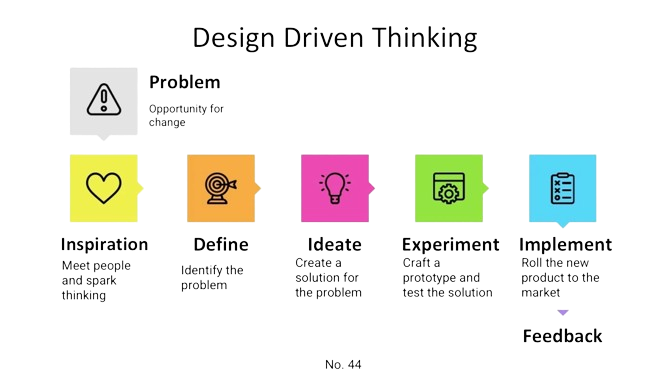

Design-Driven Development (DDD) on tarkvaraarenduse lähenemine, kus disain on keskne aspekt kogu arendusprotsessis. See hõlmab disaini ideede, põhimõtete ja suuniste rakendamist juba algusest peale ning nende integreerimist kõikidesse arendusetappidesse.
DDD põhineb tugevalt kasutajakesksel disainil ja kasutajaliidese parimate tavade rakendamisel. See tähendab, et arendusprotsess algab sageli kasutajaliidese kujundamisest ja kasutajakogemuse planeerimisest ning disainilahendused määravad arendustöö suuna.
Üks DDD olulisemaid eeliseid on kasutaja rahulolu ja usalduse suurendamine, kuna disain on tihedalt seotud kasutajate vajaduste ja eesmärkidega. See võimaldab paremat kasutajakogemust ja suuremat kasutajate kaasatust rakendustesse.
Lisaks aitab Design-Driven Development vähendada vigade arvu ja arenduse kulusid, kuna disainilahendused on testitud ja kinnitatud juba varases staadiumis ning väheneb vajadus hilisemate muudatuste järele.
Lõpuks, DDD soodustab ka disaini ja arendusmeeskondade tihedat koostööd ning aitab luua tooteid ja teenuseid, mis on visuaalselt atraktiivsed, kasutajasõbralikud ja funktsionaalsed.